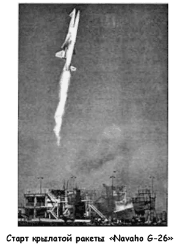
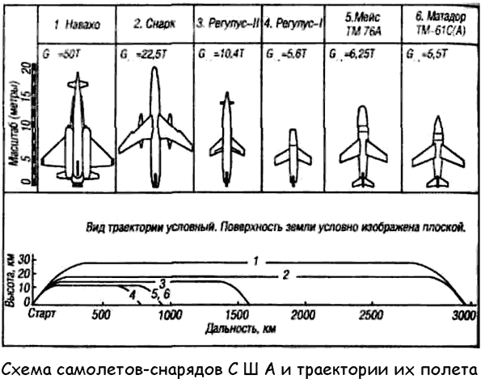

Самолеты-снаряды «Navaho», «Snark», «Regulus II»
Долгое время в Советском Союзе решения о разработке тех или иных перспективных военных проектов принимались согласно «логике» гонки вооружений: если у противника появляется какая-то новая «игрушка», то мы должны сделать такую же или еще лучше. И к теме межконтинентальных крылатых ракет советское руководство постоянно возвращалось потому, что в Америке шли активные работы в этой области.
Разведка докладывала: американцы создают дальний автоматический беспилотный аппарат по программе «Навахо» («Navaho»). Скупые сведения об этой программе подтверждали, что «Навахо» — это крылатая ракета с дальностью полета порядка 4000–5000 километров. Стало быть, если таких «Навахо» будет несколько сотен, то, не рискуя жизнями своих летчиков, американцы окажутся способны накрыть СССР атомными бомбами почти по всей его территории, а наши новейшие «миги» и опытнейшие пилоты-истребители ничего не смогут им противопоставить.
По тем временам программа «Навахо», которую вела авиационная компания «Норт Америкен», действительно производила впечатление. Было разработано несколько модификаций межконтинентальной крылатой ракеты (называемой также крылатым самолетом-снарядом). Основной вариант проходил под обозначением «Navaho G-26» (или «SM-64»).
Крылатый снаряд «Навахо» был скомпонован по схеме самолет-«утка» с треугольным крылом и имел два маршевых прямоточных воздушно-реактивных двигателя «XRJ47-W-5», расположенных по бокам фюзеляжа. Кроме того, он был снабжен тремя стартовыми жидкостно-реактивными двигателями «XLR-83-NA-1» с суммарной тягой 61 230 килограммов.
Стартовые ЖРД разгоняли снаряд по вертикали до скорости в 1,8 Маха; при этом достигалась высота в 30,5 километра.
После достижения этой высоты программный механизм, отклоняя поверхности управления, расположенные в носовой части снаряда, переводил его в пикирование. При большой скорости пикирования включалась система зажигания воздушно-реактивных двигателей и производился их запуск.
Пикирование продолжалось до высоты крейсерского полета самолета, составляющей 24,4 километра. Температура нагрева обшивки снаряда после пикирования достигала 315° С.
Прямоточные двигатели имели диаметр 1,22 метра и на маршевой скорости, соответствующей 2,3 Маха, на высоте маршевого полета развивали тягу по 18140 килограммов каждый.
Расчетная дальность снаряда «Навахо» должна была составлять 8000 километров. Система наведения — инерциальная, боевая часть — ядерная. Снаряд должны были оборудовать особой системой, рассчитанной на уклонение от первоначального курса при обнаружении снаряда системой обороны противника.
Конструкция планера снаряда была выполнена с учетом того, что эксплуатационные температуры при его полете будут довольно высокими. При изготовлении конструкции корпуса широко использовались титановые сплавы и сотовые заполнители.
Было построено довольно много опытных снарядов «Навахо». Первый опытный образец «Икс-10 Навахо» («Х-10 Navaho»), разработанный в рамках этой программы и представлявший собой телеуправляемую ракету с прямоточным двигателем, совершил полет 14 октября 1953 года.
Однако программа испытаний так и не была завершена в полном объеме вследствие аннулирования заказа в июле 1957 года. Баллистическая ракета «Атлас» оказалась более конкурентоспособной и вытеснила «Навахо» из списка оплачиваемых программ. Первый успешный запуск сверхзвукового межконтинентального самолета-снаряда «Навахо» был осуществлен лишь через два месяца после аннулирования заказа.

Помимо «Навахо», в начале 50-х годов американские ракетчики разрабатывали еще несколько проектов межконтинентальных крылатых снарядов.
Дозвуковой самолет-снаряд «Снарк» («Snark SM-62»), снабженный турбореактивным двигателем «J-57», был на тот период единственным межконтинентальным снарядом США, который успешно прошел испытания на дальность и попал в цель. На высоте 18 километров при крейсерской скорости в 1060 км/ч «Снарк» пролетал расстояние в 8000-10400 километров. При полете на малой высоте его дальность уменьшается до 3200 км.

Профиль полета самолета-снаряда выглядел следующим образом. Старт «Снарка» осуществлялся при «нулевом разбеге» с помощью двух пороховых ускорителей с тягой по 14,9 тонны каждый, работающих в течение 4 секунд. Стартовый вес «Снарка» — 22,5 тонны. Набор расчетной высоты (18 километров) продолжался на участке примерно 200 километров.
Затем следовал маршевый участок траектории, на котором работал ТРД, развивающий у земли тягу в 4950 килограммов.
На расстоянии 150–200 километров от цели «Снарк» переходил в пикирование. Во время пикирования на цель от корпуса отделялась боеголовка с термоядерным или атомным зарядом По схеме самолет-снаряд «Снарк» представляет собой «бесхвостку»-высокоплан со стреловидным крылом, снабженным элевонами. Силовая установка «Снарка» выполнена в виде компактного узла, расположенного в хвостовой части фюзеляжа. В фюзеляже также размещены баки с горючим (керосином), боевая головка с термоядерным зарядом и система управления. Система наведения — астроинерциальная.
Несмотря на то что фирма-производитель гарантировала неуязвимость «Снарка», он довольно легко мог быть сбит средствами ПВО.
Первый серийный американский сверхзвуковой самолетснаряд «Регулус II» («Regulus II») начали выпускать в США по заказу ВМФ взамен дозвукового снаряда «Регулус I».
Этот самолет-снаряд базировался на подводных лодках и снабжался обычным или ядерным зарядом.
По аэродинамической компоновке «Регулус II» представлял собой самолет-«утку» со стреловидным крылом малого удлинения. При стартовом весе 10,4 тонны максимальная дальность полета составляла 1600 километров (с подкрыльными баками), а максимальная скорость — 1920 км/ч.
Практический потолок у самолета-снаряда «Регулус II» достигал только 15–18 километров, что при уже существовавших средствах ПВО делало его уязвимым. Снаряд имел автономную систему управления и был снабжен одним маршевым турбореактивным двигателем «J-79» с форсажной камерой. Для старта использовался твердотопливный ускоритель тягой 52160 килограммов и временем работы 4 секунды.